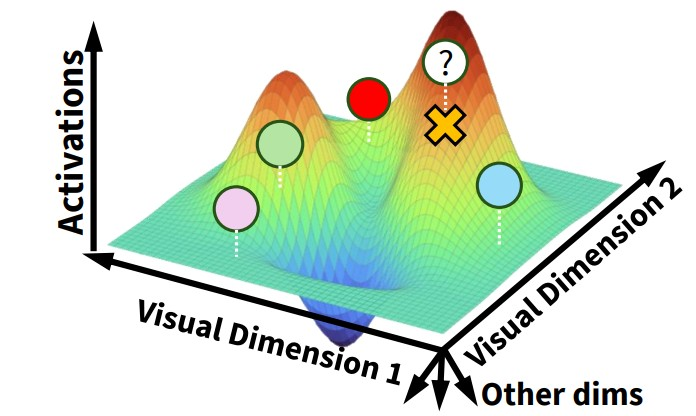
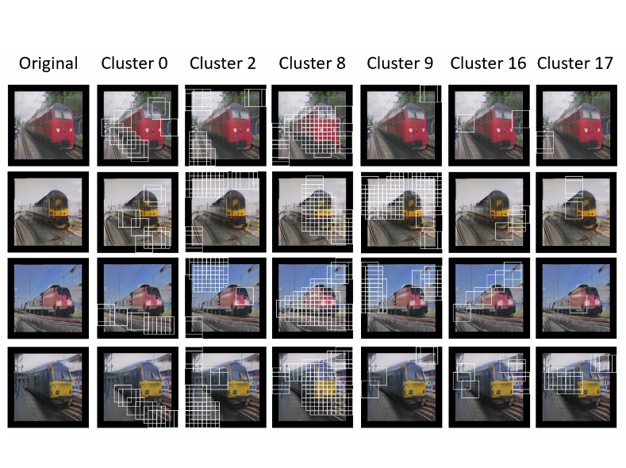

|
Andrew Luo 
I am a tenure-track Assistant Professor at the University of Hong Kong jointly appointed by Musketeers Foundation Institute of Data Science and the Psychology Department. I received my joint PhD in Machine Learning & Neural Computation from Carnegie Mellon University (CMU) in 2024, where I worked with Michael Tarr and Leila Wehbe. Before that, I earned my undergraduate degree in Computer Science from the Massachusetts Institute of Technology (MIT) in 2019. I also have a Master of Science in Machine Learning Research from CMU. My work focuses on understanding the computational principles underlying visual perception and how these principles can inform the development of improved generative models and intelligent machines. Ultimately, I aim to bridge the gap between human and machine reasoning, leading to both a deeper understanding of human cognition and advancements in artificial intelligence. I am recruiting PhDs for 2026 Fall now. (Updated Dec 1, 2025) I welcome RAs (remote or in-person) or remote collaboration with PhDs, master's, and undergraduates. |
|
Students (sorted by year and last name)
|
Collaborators (sorted by year and last name) |
ResearchI am interested in understanding human perception and building better generative models and machines that are capable of human-like reasoning. |

|
Compose Your Policies! Improving Diffusion-based or Flow-based Robot Policies via Test-time Distribution-level Composition
Jiahang Cao*, Yize Huang*, Hanzhong Guo, Rui Zhang, Mu Nan, Weijian Mai, Jiaxu Wang, Hao Cheng, Jingkai Sun, Gang Han, Wen Zhao, Qiang Zhang, Yijie Guo, Qihao Zheng, Chunfeng Song, Xiao Li, Ping Luo, Andrew F. Luo * Co-first authors In submission arxiv page / bibtex We show that composition of diffusion policies can yield consistent improvements across a diverse set of tasks. By utilizing test-time search, we can obtain a policy that is stronger than parent policies by seeking out consensus regions. |
|
Vision Transformers with Self-Distilled Registers
Yinjie Chen*, Zipeng Yan*, Chong Zhou, Bo Dai, Andrew F. Luo * Co-first authors NeurIPS 2025 Spotlight arxiv page / bibtex We show that artifacts can be removed from pre-trained ViTs without any labeled data by introducing registers in post-training. Our method uses a model combined with test-time augmentation to distill itself, leading to significant improvements in open-vocabulary segmentation and dense prediction tasks. |
|
|  |
Meta-Learning an In-Context Transformer Model of Human Higher Visual Cortex
Muquan Yu, Mu Nan, Hossein Adeli, Jacob S. Prince, John A. Pyles, Leila Wehbe, Margaret M. Henderson, Michael J. Tarr, Andrew F. Luo NeurIPS 2025 arxiv page / bibtex We show how to construct higher visual cortex encoders that can generalize across subjects, scanners, voxel sizes, protocols, and images without any additional finetuning by using meta-learning across subjects and in-context learning across stimuli. |

|
In Silico Mapping of Visual Categorical Selectivity Across the Whole Brain
Ethan Hwang, Hossein Adeli, Wenxuan Guo, Andrew F. Luo, Nikolaus Kriegeskorte NeurIPS 2025 arxiv page / bibtex Computational tests of selectivity using more accurate transformer encoders of the brain. |
|
Reanimating Images using Neural Representations of Dynamic Stimuli
Jacob Yeung, Andrew F. Luo, Gabriel Sarch, Margaret M. Henderson, Deva Ramanan, Michael J. Tarr CVPR 2025 Oral arxiv page / bibtex We propose image-conditioned decoding of perceived motion from fMRI data, we show that this can be used to animate images with an video diffusion model. |
|
|
Brain Mapping with Dense Features: Grounding Cortical Semantic Selectivity in Natural Images With Vision Transformers
Andrew F. Luo, Jacob Yeung, Rushikesh Zawar, Shaurya Dewan, Margaret M. Henderson, Leila Wehbe*, Michael J. Tarr* * Co-corresponding authors ICLR 2025 arxiv page / bibtex We propose an efficient gradient-free distillation module capable of extraction high quality dense CLIP embeddings, and utilize these embeddings to understand semantic selectivity in the visual cortex. |
|
|
Disentangled Acoustic Fields For Multimodal Physical Scene Understanding
Jie Yin, Andrew F. Luo, Yilun Du, Anoop Cherian, Tim K Marks, Jonathan Le Roux, Chuang Gan IROS 2024 arxiv page / bibtex We investigate the problem of visual-acoustic navigation conditioned on a continuous acoustic field representation of audio. |
|
|
DiffusionPID: Interpreting Diffusion via Partial Information Decomposition
Shaurya Dewan, Rushikesh Zawar, Prakanshul Saxena, Yingshan Chang, Andrew F. Luo, Yonatan Bisk NeurIPS 2024 arxiv page / bibtex We leverage ideas from information theory to understand the contributions of individual text tokens and their interactions when generating images. |
|

|
BrainSCUBA: Fine-Grained Natural Language Captions of Visual Cortex Selectivity
Andrew F. Luo, Margaret M. Henderson, Michael J. Tarr, Leila Wehbe ICLR 2024 arxiv page / bibtex We propose a way to leverage contrastive image-language models (CLIP) and fine-tuned language models to generate natural language descriptions of voxel-wise selectivity in the higher order visual areas. |
|
Brain Diffusion for Visual Exploration: Cortical Discovery using Large Scale Generative Models
Andrew F. Luo, Margaret M. Henderson, Leila Wehbe*, Michael J. Tarr* * Co-corresponding authors NeurIPS 2023 Oral, (top 0.7% of all submissions) project page / bibtex / code We propose a way to generate images that activate regions of the brain by leveraging natural image priors from Diffusion models. |
|
|
Neural Selectivity for Real-World Object Size In Natural Images
Andrew F. Luo, Leila Wehbe, Michael J. Tarr, Margaret M. Henderson BioRxiv, 2023 (in submission) bioRxiv page / bibtex We examine the selectivity of the brain to real-world size in complex natural images. |
|
|
Learning Neural Acoustic Fields
Andrew F. Luo, Yilun Du, Michael J. Tarr, Joshua B. Tenenbaum, Antonio Torralba, Chuang Gan NeurIPS 2022 (Summer intership at IBM) project page / bibtex / code We propose a learnable and compact implicit encoding for acoustic impulse responses. We find that our NAFs can achieve state-of-the-art performance at a tiny size footprint. |
|
|  |
Prototype memory and attention mechanisms for few shot image generation
Tianqin Li*, Zijie Li*, Andrew F. Luo, Harold Rockwell, Amir Barati Farimani, Tai Sing Lee ICLR 2022 bibtex code We show that having a prototype memory with attention mechanisms can improve image synthesis quality, and learn interpretable visual concept clusters. |

|
SurfGen: Adversarial 3D Shape Synthesis with Explicit Surface Discriminators
Andrew F. Luo, Tianqin Li, Wen-Hao Zhang, Tai Sing Lee ICCV 2021 arxiv page / bibtex / code We propose a surface based discriminator for implicit shape generation. Our discriminator uses differentiable ray-casting and marching cubes. |

|
End-to-End Optimization of Scene Layout
Andrew F. Luo, Zhoutong Zhang, Jiajun Wu, Joshua B. Tenenbaum CVPR 2020 oral project page / bibtex / code We propose contrained scene synthesis using graph neural networks, we show that generated scenes can be refined using differentiable rendering. |

|
Learning to Infer and Execute 3D Shape Programs
Yonglong Tian, Andrew F. Luo, Xingyuan Sun, Kevin Ellis, William T. Freeman, Joshua B. Tenenbaum, Jiajun Wu ICLR 2019 project page / bibtex / code We propose a learnable decomposition of 3D shapes into symbolic programs that can be executed. |